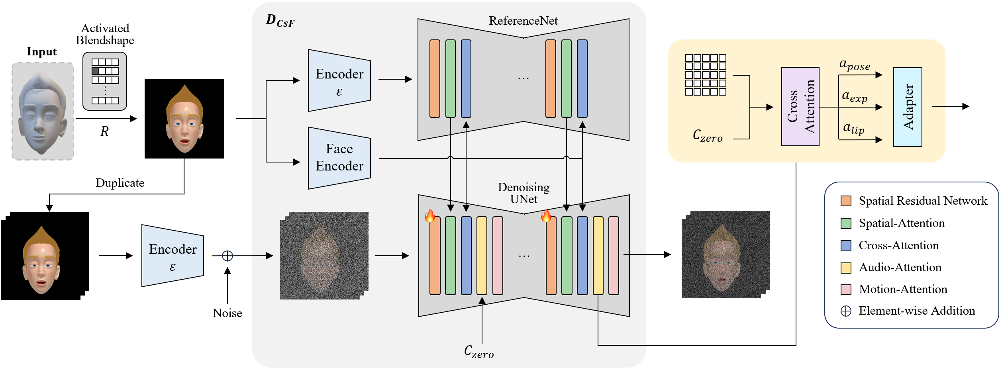
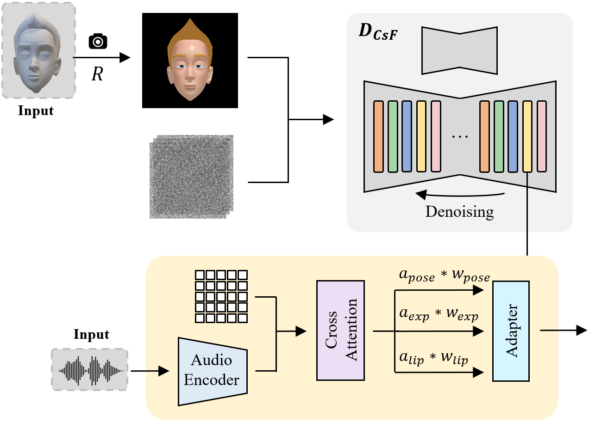
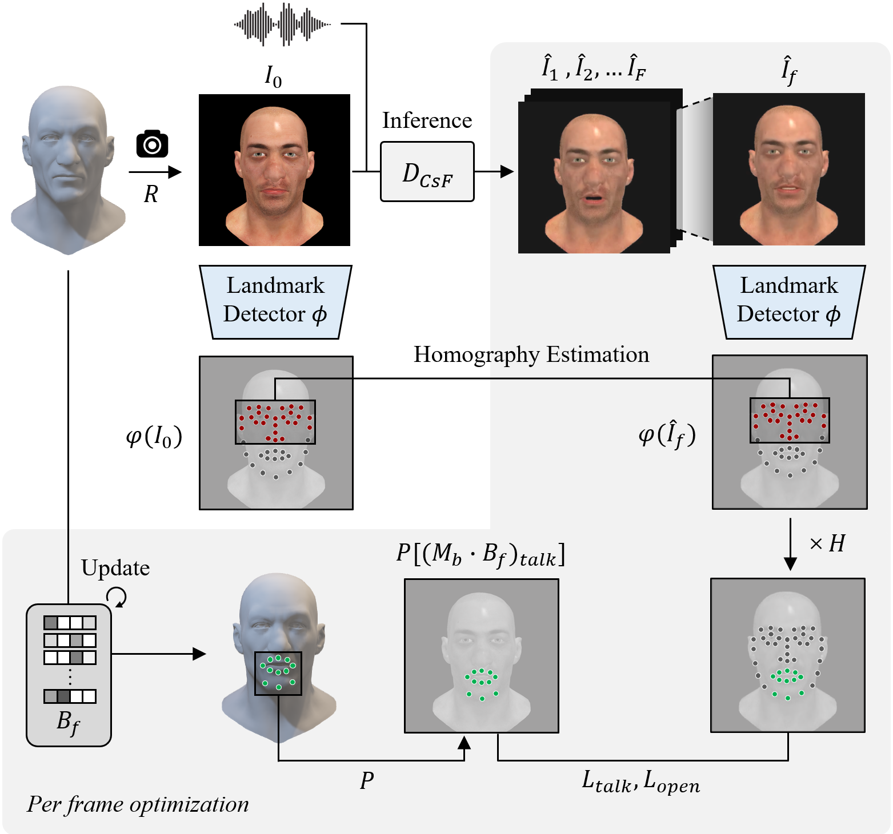

Method

AnyTalk leverages an audio-driven video diffusion model to generate 3D speech animation for arbitrary characters. It follows a two-stage pipeline: generating a talking-head video from a rendered image of the character, then uplifting that video into blendshape parameters. No animation data is required at any point in the process.
Character-specific Fine-tuning (CsF)

Applying a pre-trained talking-head generation model (Hallo) directly to a 3D character produces visual mismatches such as unnatural clothing, distorted chins, or a drift toward generic human appearance. CsF addresses this by rendering an image of the character for each activated blendshape, duplicating it into a still-image video, and pairing it with a zeroed-out audio embedding representing "no motion." During fine-tuning, the audio, motion, and ReferenceNet attention layers stay frozen, and only the spatial residual network is trained. This lets the model learn the character's appearance without overwriting its pre-trained motion prior.
Video Inference

At inference, the fine-tuned model takes real speech audio instead of the zero-motion condition used during training. Scaling weights are applied to the pose, expression, and lip attention modules (wpose=0, wexp=1, wlip=2), keeping the head pose stable while driving dynamic lip motion. This stability significantly improves the reliability of the subsequent blendshape optimization stage.
Blendshape Optimization

Blendshape parameters are estimated from the generated 2D video. Talk-related landmark vertices are identified once via ray casting on the neutral mesh, then expression-invariant landmarks are used to estimate a homography that compensates for small frame-to-frame head shifts. The final parameters are optimized using a talk landmark loss, an asymmetric mouth-opening loss that enforces correct mouth aperture, and a regularization loss to keep unrelated blendshapes untouched.